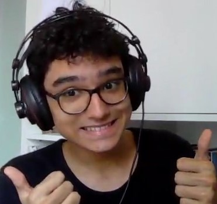
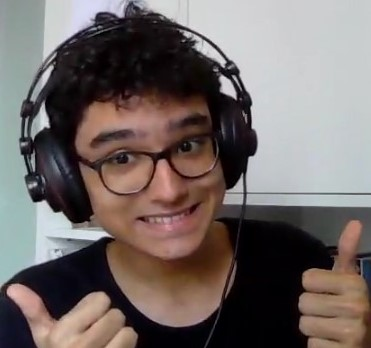

Criadores

 

Salve, salve! Beleza com vocês? Aqui é o Vitor Gabriel, mais conhecido como Buzz. Tenho 15 anos (01 de dezembro de 2020) e sou um jovem aprendiz no ramo das pixel arts. Espero que gostem do site e flws! Visite meu site pessoal.
Opa! Beleza? Meu nome é Gabriel Guimarães, vulgo Guima, tenho 16 (1 de dezembro de 2020). Gosto de um lofizinho, jogar um games ,ler e ver uns animes. Espero que vocês tenham gostado do site e até! Visite meu site sobre mim.
Salve! Aqui é o Enzo, conhecido pelos editores como Enzimas. Tenho 16 (02 de dezembro de 2020) e no meu tempo livro eu gosto de assistir animes e algumas series, jogar, ir no cinema, fazer exercício e comer. Espero que goste do nosso trabalho! Visite meu site pessoal para saber mais.
Opa, tudo bem? Eu sou o Matheus, também conhecido como Teuzim, e ainda tenho 15 anos :( (02 de dezembro de 2020). Por algum motivo, eu jogo CS:GO (decepções) e eventualmente leio ou vejo filmes, é divertido. Visite este site se querer saber mais sobre mim.
Salve, salve! Beleza com vocês? Aqui é o Vitor Gabriel, mais conhecido como Buzz. Tenho 15 anos (01 de dezembro de 2020) e sou um jovem aprendiz no ramo das pixel arts. Espero que gostem do site e flws! Visite meu site pessoal.
Opa! Beleza? Meu nome é Gabriel Guimarães, vulgo Guima, tenho 16 (1 de dezembro de 2020). Gosto de um lofizinho, jogar um games ,ler e ver uns animes. Espero que vocês tenham gostado do site e até! Visite meu site sobre mim.
Salve! Aqui é o Enzo, conhecido pelos editores como Enzimas. Tenho 16 (02 de dezembro de 2020) e no meu tempo livro eu gosto de assistir animes e algumas series, jogar, ir no cinema, fazer exercício e comer. Espero que goste do nosso trabalho! Visite meu site pessoal para saber mais.
Opa, tudo bem? Eu sou o Matheus, também conhecido como Teuzim, e ainda tenho 15 anos :( (02 de dezembro de 2020). Por algum motivo, eu jogo CS:GO (decepções) e eventualmente leio ou vejo filmes, é divertido. Visite este site se querer saber mais sobre mim.
Salve, salve! Beleza com vocês? Aqui é o Vitor Gabriel, mais conhecido como Buzz. Tenho 15 anos (01 de dezembro de 2020) e sou um jovem aprendiz no ramo das pixel arts. Espero que gostem do site e flws! Visite meu site pessoal.
Opa! Beleza? Meu nome é Gabriel Guimarães, vulgo Guima, tenho 16 (1 de dezembro de 2020). Gosto de um lofizinho, jogar um games ,ler e ver uns animes. Espero que vocês tenham gostado do site e até! Visite meu site sobre mim.
Salve! Aqui é o Enzo, conhecido pelos editores como Enzimas. Tenho 16 (02 de dezembro de 2020) e no meu tempo livro eu gosto de assistir animes e algumas series, jogar, ir no cinema, fazer exercício e comer. Espero que goste do nosso trabalho! Visite meu site pessoal para saber mais.
Opa, tudo bem? Eu sou o Matheus, também conhecido como Teuzim, e ainda tenho 15 anos :( (02 de dezembro de 2020). Por algum motivo, eu jogo CS:GO (decepções) e eventualmente leio ou vejo filmes, é divertido. Visite este site se querer saber mais sobre mim.
| Nome | Funções |
|---|---|
| Enzo Braz | Criar e estilizar o NAV e o FOOTER |
| Descenvolver o CSS e deixar o site responsive | |
| Criar a galeria de imagens | |
| Gabriel Guimarães | Desenvolver o JavaScript do Jogo |
| Criar o conteúdo da página Recife | |
| Ajudar o desenvolvimento do CSS | |
| Matheus Gomes | Interligar o Visual Studio Code de todo mundo com o GitHub |
| Criar o Comprehensive Layout | |
| Ajudar o desenvolvimento do CSS | |
| Vitor Freitas | Criar o conteúdo da página Inicial |
| Criar as pixelarts do Jogo e do Easteregg | |
| Selecionar as imagens do site |
Colaborador

Esse aqui em cima é o Grande Coutinho, nosso mestre. As sugestões e ensinamentos dele colaborou no nosso avanço no conhecimento da arte de programar em web.
Bibliografia
Brasil Escola
Toda Matéria
Wikipédia